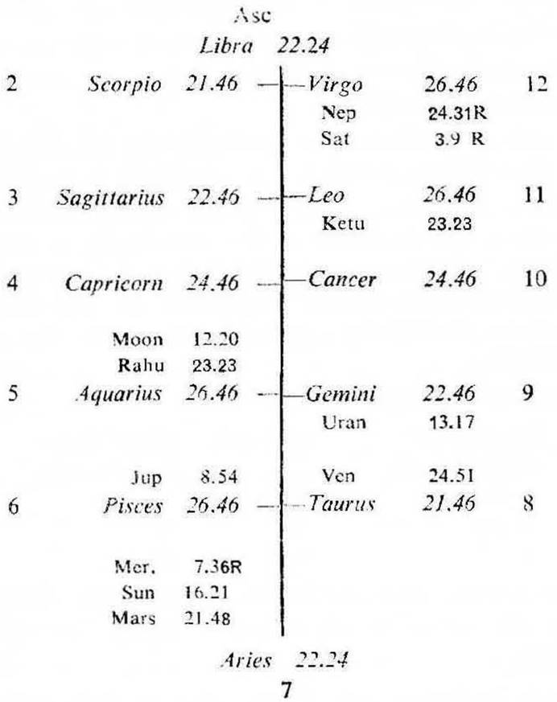
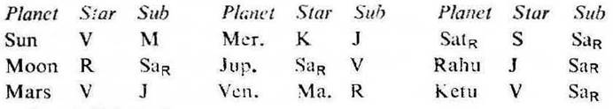
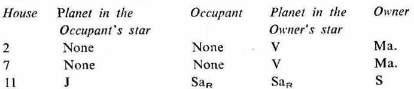

Female. Birth 30-4-1951 Monday; 7-30 p.m. I.S.T.; 23°N 2', 72°E 35; Ayanamsa 23° 4'.


7th cusp (Marriage). The sub lord of the 7th cusp is Saturn. It is in the star Sun owning 11 and occupying 6. It is in the sub Saturn owning 5 and occupying 11. So Saturn is the significator of 11 (permanent friendship), 6 (separation) and connected with 5 (love affair) and 11. Hence the cuspal sub lord of the 7th (Saturn) promises marriage but denotes separation.
11th cusp (Permanent relationship). The sub lord of the 11th cusp is Sun. It is in the star Venus owning 1 and 8 and occupying 8. It is in the sub Moon owning 10. So Sun is the significator of 1 (separation), 8 (disappointment) and connected with 10 (separation). Hence the cuspal sub lord of the 11th (Sun) denotes disappointment and separation in married life.
5th cusp (Love affair). The sub lord of the 5th cusp is Venus. It is in the star Mars owning 2, 7 and occupying 6. It is in the sub Rahu representing Moon (being in conj.) owning 10 and occupying 4. So Venus is the significator of 2, 7 (marriage), 6 (separation) and connected with 4 (disappointment in love-it being 12 to 5) and 10 (separation). Hence the cuspal sub lord of the 5th (Venus) denotes choice marriage but indicates disappointment and separation in married life.

Thus Jupiter, Venus and Saturn are the strong significators of marriage. Hence marriage will take place during their joint period.
The native was born during the period of Rahu with balance of 10Y 4M 6D. The period of Jupiter starts from 6-9-1961. Jupiter is aspected by Saturn a natural malefic which causes delay. So there is no possibility of marriage during the joint period of Jupiter and Saturn. Hence marriage will take place during the joint period of Jupiter, Venus and Saturn which will commence from 4-4-1971 and will continue upto 6-9-1971. The native will get married when the transit agrees with the joint period ruler or rulers within this time.
Sun will transit in the star Venus in Aries from 28-4-1971 upto 12-5-1971. This is a favourable period for marriage. Actually marriage took place on 3-5-1971 when Sun was in Aries 19° 0' in the star Venus (the sub period ruler); Jupiter in Scorpio 10° 42'R in the star Saturn (the inter period ruler).
(a) Jupiter, Venus and Saturn are both the significators of marriage (2, 7 and 11) and separation or divorce (1, 6 and 10). Venus and Saturn have been discussed earlier; while Jupiter owns 6, it is in the sub Venus owning 1 and so it is the significator of 1 and 6.
(b) The cuspal sub lords of the 7th and 11th denote separation in married life. So during the joint period of the significators of 1, 6 and 10 (Jupiter, Venus and Saturn the same planets and during the same time from 4-4-1971 to 6-9-1971 as previously discussed), the husband suspected the character of the native; and she was asked to leave the house of the husband on 15-7-1971 and to have her own way. Hence separation in married life.
On that day Sun was transitting in Gemini 28° 32' in the star Jupiter (the period ruler); Moon in Pisces 27° 0' in the sub Jupiter; Jupiter in Scorpio 3° 24'R in the star Saturn (the inter period ruler); Venus in Gemini 16° 32' in the sub Venus (the sub period ruler) and Saturn in Taurus 9° 34' in the sub Venus.
During the joint period of Jupiter and Moon (the significator of 6 and 10; its star lord Rahu in conj. with Moon owning 10 and its sub lord Saturn the significator of 6) in the year 1973, separation resulted into divorce.